Contents
function varargout = readEELSdata(fullpathname)
%%%%%%%%%%%%%%%%%%%%%%%%%%%%%%%%%%%%%%%%%%%%%%%%%%%%%%%%%%%%%%%%%%%%%%%%%%% % Input: (OPTIONAL) % fullpathname = 'C:\x\y\z.dm3' % fullpathname = No input or [] % % Output:(DEFAULT = EELS) % EELS = EELS data structure % si_struct = All data in structure format % (No output argument) = plotEELS(EELS) %%%%%%%%%%%%%%%%%%%%%%%%%%%%%%%%%%%%%%%%%%%%%%%%%%%%%%%%%%%%%%%%%%%%%%%%%%%
The routine construct a structure datatype EELS which contains all the required fields for EELS analysis. The data is read from a .dm3 file format of Gatan Digital Micrograph.
Select .dm3 file from the folder.
If no input argument then use uigetfile to open an file selector and select a .dm3 file. A .dm3 file could be a spectrum image or a single spectrum. If the file is not present then select cancel from the file selector window. This will send an error message in the command window. If the file is present, then path name of the selected file will be assigned to EELS.Fullpathname. A fullpathname can be passed as an input argument. The fullpathname is assigned to EELS.Fullpathname.
if(nargin<1) [filename, pathname] = uigetfile({'.dm3'},'File Selector'); if isequal(filename,0) || isequal(pathname,0) error('User pressed cancel') else EELS.Fullpathname = strcat(pathname,filename); end else EELS.Fullpathname = fullpathname; end
Read spectrum data from .dm3 file
The .dm3 file is read using DM3Import.m routine. The routine is written by Robert McLeod.
si_struct=DM3Import(EELS.Fullpathname);
Opening /Users/veersaysit/Dropbox/Matlab/Ge-basedSolarCell_24082015/ADF_20kX_afterwards.dm3 Throwing away display Parsing Image
All the data fields from dturcture si_struct are reassigned in the data structure EELS. The si_struct can be used independently. The orientation of the data correspends to 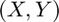 cartesian axis. The SI field in EELS structure will have image indexing 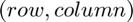. Increase in 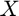-coordinates correspends to increase in 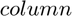 and increase in 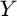-coordinates corresponds to increase in 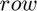. Spectrum image will be treated as an image rather than points scattered in -coordinates.
Create an EELS structure from si_struct
- The presence of image_data and zaxis fields in si_struct corresponds to the presence of EELS spectrum image. It will be asigned to the field EELS.SImage. The data from si_struct.image_data are in the cartesian format. use reshape and permute functions of matlab to swap the and -coordinates which now corrsponds to and .
- The presence of image_data, xaxis, _yaxis and no zaxis in si_struct corresponds to the presence of overview image or survey image. It could be dark field (DF) or bright field (BF) image.
- The presence of image_data and only xaxis field in si_struct corrsponds to the presence of single spectrum.
- The presence of spectra_data field in si_struct correspends to single spectrum. This type of spectra are found in EELS atlas reference spectrum in Gatan Digital Micrograph.
- The presence of only xaxis field in si_struct corresponds to a single spectrum.
- For spectrum image the dispersion is mapped directly from si_struct.zaxis.origin to EELS.dispersion and for single spectrum the si_struct.xaxis.origin to EELS.dispersion.
- If the probe step size 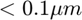 use 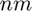 scale.
- Read convergence (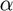) and collection angle (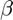). While saving the .dm3 file in Gatan Digital Micrograph, if the and are were not specified then the values will be dummy. User need to assign and saperately in the code.
- The number of channels are defined as same length as the spectrum. The energy-loss axis is calibrated from start of the spectra which is not channel number 1 (approx channel 100 for JEOL 2010F @sheffield) and the dispersion will be acounted by multiplying the channels by dispersion.
- The dimensions of the spectrum image will be present in the field SI_x (no. of rows), SI_y (no. of columns) and SI_z (length of spectrum). The dimensions of survey image will be present in Image_x (no. of rows) and Image_y (no. of columns). If none of the fields described above are present the the routine shows an error message.
if(isfield(si_struct,'image_data')) %EELS.data=si_struct.image_data; if(isfield(si_struct,'zaxis')) % Read SI_x, SI_y and SI_z size [EELS.SI_y,EELS.SI_x,EELS.SI_z] = size(si_struct.image_data); EELS.SImage = permute(reshape(si_struct.image_data,... EELS.SI_x,EELS.SI_y,EELS.SI_z),... [2,1,3]); [EELS.SI_x,EELS.SI_y,EELS.SI_z] = size(EELS.SImage); % Read Dispersion information EELS.dispersion=si_struct.zaxis.scale; % Calibrate energy_loss_axis of the spectrum channels = (1:1:EELS.SI_z); EELS.energy_loss_axis=((channels-si_struct.zaxis.origin)*EELS.dispersion)'; % Read step size and units if(si_struct.xaxis.scale < 0.1) EELS.step_size.x = si_struct.xaxis.scale*1000; EELS.step_size.xunit = 'nm'; else EELS.step_size.x = si_struct.xaxis.scale; EELS.step_size.xunit = si_struct.xaxis.units; end if(si_struct.yaxis.scale < 0.1) EELS.step_size.y = si_struct.yaxis.scale*1000; EELS.step_size.yunit = 'nm'; else EELS.step_size.y = si_struct.yaxis.scale; EELS.step_size.yunit = si_struct.yaxis.units; end % Define probe size EELS.probe_size_nm = 0; % Define Convergence and Collection angle EELS.conv_angle_mrad = si_struct.conv_angle_mrad; EELS.coll_angle_mrad = si_struct.coll_angle_mrad; % Read Magnification EELS.mag = si_struct.mag; elseif(isfield(si_struct,'xaxis') && isfield(si_struct,'yaxis')) % Read Image EELS.Image=si_struct.image_data; % Read Image_x and Image_y size [EELS.Image_x,EELS.Image_y] = size(EELS.Image); % Read scale and units if(si_struct.xaxis.scale < 0.1) EELS.scale.x = si_struct.xaxis.scale*1000; EELS.scale.xunit = 'nm'; else EELS.scale.x = si_struct.xaxis.scale; EELS.scale.xunit = si_struct.xaxis.units; end if(si_struct.yaxis.scale < 0.1) EELS.scale.y = si_struct.yaxis.scale*1000; EELS.scale.yunit = 'nm'; else EELS.scale.y = si_struct.yaxis.scale; EELS.scale.yunit = si_struct.yaxis.units; end % Read Magnification EELS.mag = si_struct.mag; elseif(isfield(si_struct,'xaxis')) % Read spectrum EELS.spectrum = si_struct.image_data'; % Read Dispersion information EELS.dispersion=si_struct.xaxis.scale; % Calibrate energy_loss_axis of the spectrum channels=(1:1:length(EELS.spectrum)); EELS.energy_loss_axis=((channels-si_struct.xaxis.origin)*EELS.dispersion)'; % Read Magnification EELS.mag = si_struct.mag; end elseif(isfield(si_struct,'spectra_data')) % Read spectrum if(iscolumn(si_struct.spectra_data{1,1})) EELS.spectrum=si_struct.spectra_data{1,1}; else EELS.spectrum=si_struct.spectra_data{1,1}'; end if(isfield(si_struct,'xaxis')) % Read Dispersion information EELS.dispersion=si_struct.xaxis.scale; % Define number of channels channels=(1:1:length(si_struct.spectra_data{1,1})); % Calibrate energy_loss_axis of the spectrum EELS.energy_loss_axis=((channels-si_struct.xaxis.origin)*EELS.dispersion)'; end else error('Not a valid file'); end
Display EELS
Display the EELS structure tree.
strucdisp(EELS);
| |--- scale | | | |-- xunit : 'nm' | |-- yunit : 'nm' | |------ x : 6.17981 | |------ y : 6.17981 | O | |-- Fullpathname : '/Users/veersaysit/Dropbox/Matlab/Ge-basedSolarCell_24082015/ADF_20kX_afterwards.dm3' |------- Image_x : 512 |------- Image_y : 512 |----------- mag : 20000 |--------- Image : [512x512 Array]
Manage output arguments
There can be up to two output argument. The primary output argument is EELS structure and secondary is si_struct from DM3Import.m. If no output arguments present then plot EELS.
if(nargout == 0) plotEELS(EELS); else varargout = {EELS,si_struct}; end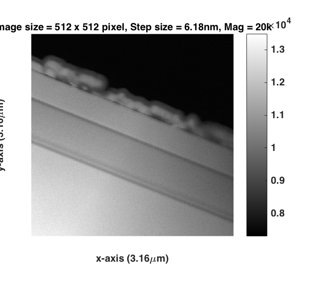